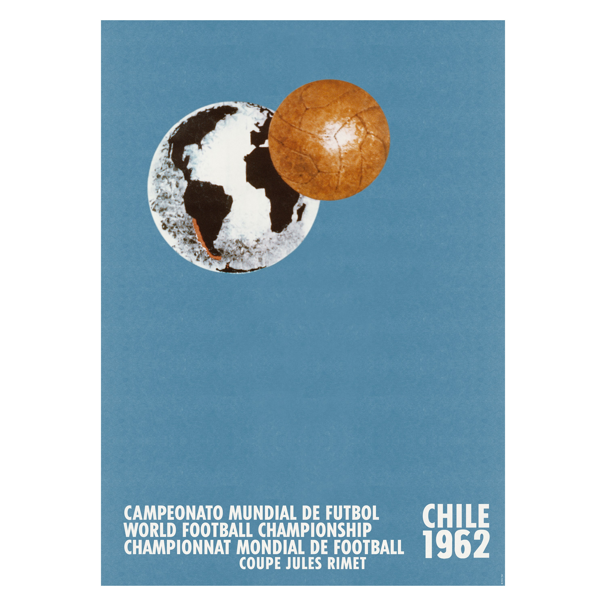

Official Poster
The official poster for the 1962 FIFA World Cup in Chile was designed by the Chilean sculptor and graphic artist Galvarino Ponce Morel. His entry was selected by FIFA in 1961 from over 300 submissions.

Galvarino Ponce Morel
Galvarino Ponce Morel (1921–2012) was a prominent Chilean sculptor and commercial artist renowned for creating the official 1962 FIFA World Cup poster and for his massive, classical bronze monuments throughout Chile.
Beyond graphic design, Ponce Morel was a master of canonical figurative sculpture, often focusing on military and historic themes. He was an officer in the Chilean Army (Infantry) before turning to art full-time. He received a Doctorate in Fine Arts from the Accademia Albertina di Belle Arti in Turin, Italy, while on a military service commission in 1951. He created more than 100 busts and full statues, including those of Arturo Prat in Antofagasta and Gabriel González Videla in La Serena. His sculptures are located as far away as Canada, the United States, and Italy. He was the son of Galvarino Ponce Arellano, a Chilean politician and dentist. He passed away at the age of 91 in his home and workshop in San Bernardo on November 4, 2012. In recent years, the Chilean Army inaugurated a temporary exhibition hall in his name to showcase his life's work as a "soldier-sculptor".